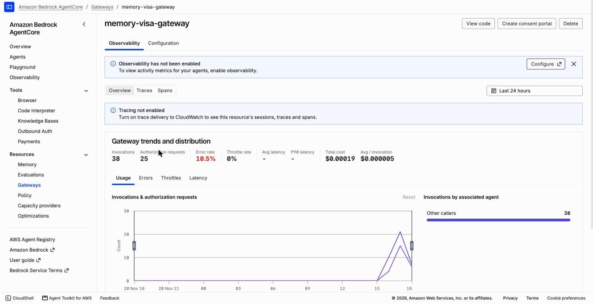
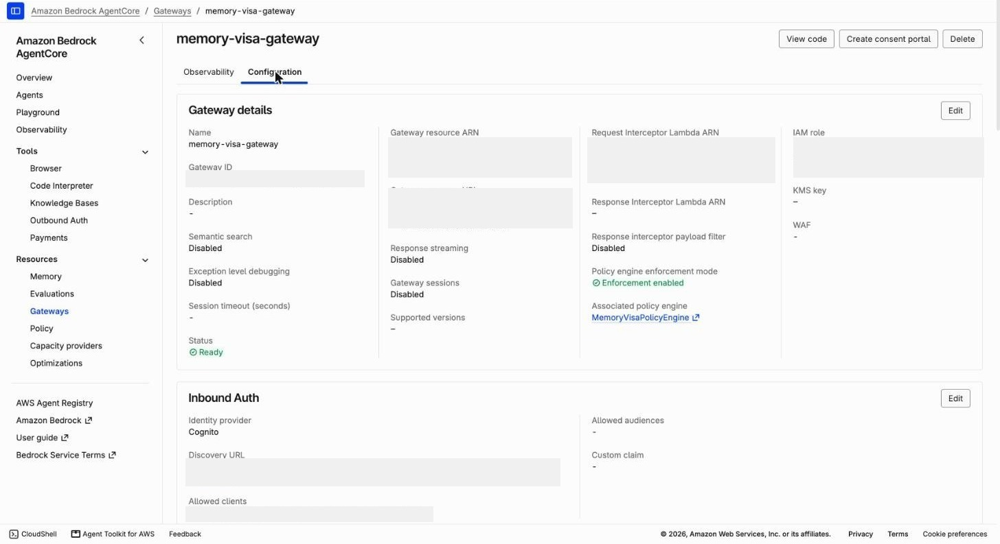
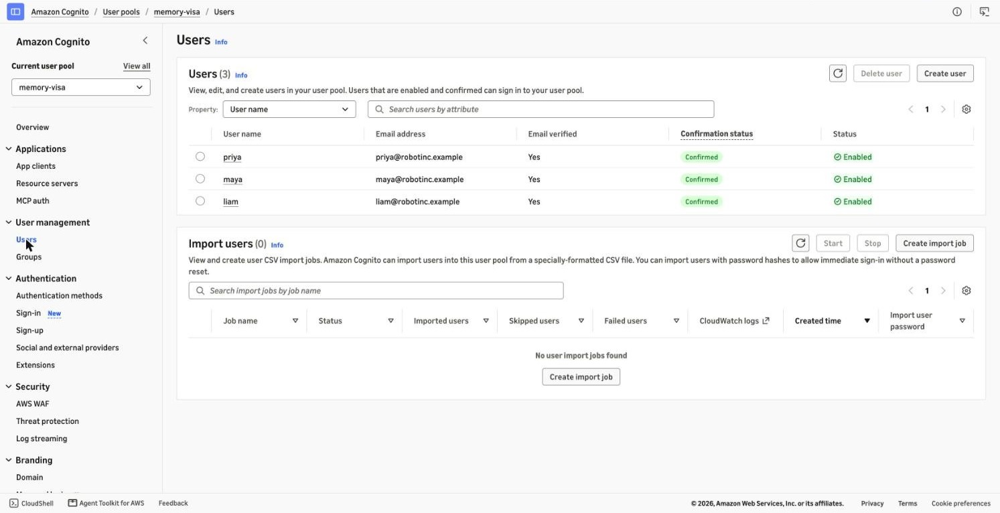

Visas, Not Keys
How teams share what their AI agents know, without handing over the building
A key opens a door for good. A visa lets one named person through, for a stated reason, until a stated time. The person holds it, their agent travels on it, and the border guard is AWS.
Anyone can lock a door. The hard version is: can I let the right person in, on purpose, for a stated reason, for exactly as long as it takes, without leaving the door open behind them?
Three days before the Atlas-v2 ships, Maya hits a wall.
She's in Engineering at Robotinc. Her packaging manifest needs one specific fact from Legal's files: an export-control classification. She doesn't have access to it - it's Legal's domain, and for good reason most days of the year.
This is the actual test of any access-control system, and it's a more interesting one than "can I keep people out." Anyone can lock a door. The hard version is: can I let the right person in, on purpose, for a stated reason, for exactly as long as it takes, without leaving the door open behind them? Can I prove, afterward, exactly who let them in and why?
AWS Bedrock AgentCore already ships the parts for the "keep people out" half: a Gateway with a policy engine, Cognito sign-in, and namespaces in Memory. None of that gets reinvented here. What it doesn't ship is Maya's situation: a deliberate, temporary, audited crossing of a boundary that's supposed to hold every other day of the year.
That's the part memory-visa builds, with AWS's own tools and no new infrastructure. It ends up as three answers, not one:
- Most facts should not need a crossing at all. Legal publishes the classification once, with Legal's name on it, and everyone in the company can read it.
- The exception gets a visa. One person, one namespace, a stated reason, a short window, and a named human who said yes. The visa belongs to the person; their agent only carries it.
- AWS holds the line on every read. Our code decides who gets a visa. The read itself happens with credentials that IAM limits to one namespace until one moment, and when the window closes the refusal comes from AWS.
Why Share Memory At All
Once a company has more than a few people working with AI agents, what those agents learn ends up in islands. What Engineering's people taught their agent, Legal's people never see. Finance starts from zero on a question Engineering answered last quarter. Put that memory in one shared, namespaced store and the payoff compounds: anyone's agent can draw on what the company already knows, not just its own slice.
The catch shows up the moment you actually try it. Centralised means every agent can now see everything, which is worse than the islands you started with - that's not a hypothetical, it's the first thing that breaks. memory-visa is the piece in between: the store is shared, each team's part of it stays isolated by default, and crossing that boundary is a deliberate, audited, time-boxed act, not a permanent hole in the wall.
One distinction runs through everything below. Memory here belongs to people and teams, not to agents. An agent is how a person reaches it. So MCP means Maya keeps using Claude, Liam can be on Cursor, Priya on whatever ships next year: they all call the same tools behind the same Gateway, into the same memory, each as themselves.
The Problem, Inside One Company
Robotinc ships the Atlas-v2, their new warehouse robot. Four people, four defaults:
Engineering
Legal
Finance
contractor - external, one project, no department
The first three each see only their own department's memory and tools, nobody else's - correctly, on an ordinary day. Jordan starts narrower still, the way a contractor's access should look from day one rather than something retrofitted after the fact.
Today isn't an ordinary day for Maya - and "ask Liam to paste it into Slack" isn't an audit trail.
| Requirement | Failure mode if unmet |
|---|---|
| Department isolation | Maya reads Priya's confidential Q4 budget notes by accident, because nothing actually stops Engineering from reading Finance's notes. |
| Controlled cross-domain access | Maya needs Liam's classification before the shipment goes out. Permanent isolation makes that impossible; no isolation makes row one pointless. |
The same mechanism covers Jordan's trickier case too: when he needs an exception, he goes through the exact same grant workflow Maya does. Contractors should get the tightest defaults and the most audited exceptions - full-time status shouldn't be the baseline everyone starts from.
Getting on the Same Page
If you're opening the repo for the first time, here is how the pieces fit together:
| Term | What it is |
|---|---|
| Bedrock AgentCore | AWS's managed runtime for AI agents. A Gateway fronts your tools behind one authenticated endpoint; Memory holds agent memory, namespaced per tenant, in two tiers - short-term (the raw event, written and readable immediately) and long-term (facts automatically extracted from short-term memory by a background process, searchable only once that extraction finishes); a Policy Engine evaluates access rules before a request reaches your code at all. |
| Cedar | The policy language AWS open-sourced for exactly this - permit/forbid statements over principal, action, and resource, default-deny, evaluated by the Policy Engine. |
| Cognito | The identity provider. Every caller authenticates here first; org and department claims can ride along as JWT claims for Cedar to read as tags on the principal - though as the EngineeringTools gate below shows, the access tokens this project's Gateway actually validates don't carry them, so that path never fires here. |
| MCP (Model Context Protocol) | The open protocol an AI client uses to discover and call tools. tools/list says what's callable; tools/call invokes one. Client-agnostic by design - that's what makes bring-your-own-client possible at all. |
| Gateway Target | What the Gateway actually forwards a call to - a Lambda function, an HTTP endpoint, or another AgentCore Runtime. A target's real tools are what Cedar's own schema validates actions against. |
Put together, every call takes the same path regardless of which tool it's actually reaching for:
Claude / Cursor / Kiro
Cedar evaluation
Lambda / HTTP / Runtime
Five Ways to Share, and Which One Needs a Human
"Share memory across teams" is not one problem. Asking a person to approve every read does not scale, and letting everyone read everything is the failure this post started with. It helps to name the patterns separately, because each one has a different owner and a different cost:
| Pattern | Who can read | Who decides | In this repo |
|---|---|---|---|
| Scoped by default | You, in your own namespace | Nobody. It is the default | Live |
| Shared by design | Your team, in the department's namespace | Whoever put you in the team | Live for departments. Project namespaces are in the tests only |
| Published facts | Everyone in the org | The domain's owner, once, when publishing | Live |
| Brokered answers | Nobody reads; the owning team's agent answers a question | The owning team's agent and its rules | Not built |
| The visa | One person, one namespace, a short time | The domain's owner, each time | Live |
The first three carry the volume. The visa is the exception path, and it is the one most teams have not built, so most of this post is about it. The point of the table is the order: if people need a visa every day for the same fact, that fact should have been published.
What AgentCore Ships, and Where It Stops
Before building a custom grant store, the obvious question is whether AgentCore already handles time-boxed access out of the box. It comes close: AWS ships Dogwood, a policy language that extends Cedar's authorization model with stateful, session-aware conditions, so a policy can reason over what happened earlier in a session (authoring guide; good background on the policy-session mechanics in sph.sh's writeup and a practical walkthrough at subagentic.ai).
The catch is that the history belongs to one caller. On an authenticated Gateway, AWS's documentation says the session is bound to the caller's identity: "Two different callers supplying the same session ID get isolated sessions — the identity is part of the session key."
- What it solves: "Did Maya call RunTests before calling Deploy?" One person, one session.
- What it can't see: "Did Liam approve a grant unlocking Legal's files for Maya?" Two people, two separate sessions.
An access grant is inherently a two-person handshake - one person asks, someone else approves. Because Dogwood can't look across callers, no amount of policy configuration will make it hold an approval.
That's why the grant lives in its own table, GrantStore. Cedar does less here than the name on the box suggests, and it is better to say so: today it holds one baseline permit for the tools, and the department rule it was meant to enforce cannot fire on this auth path (more on that below). The grant is checked in the tools Lambda, and the read it allows is then enforced by IAM. Static isolation stays as it is; GrantStore sits on top as an audited exception layer.
The Lifecycle
Request, approve, use within the window, expire automatically, audit trail throughout. No manual cleanup step: expiry is checked lazily, the next time anyone asks rather than on a cron.
into Legal's domain, with a reason
waiting on Liam
time-boxed window opens
then closes automatically
No grant, no access. Approved or not, it's always Liam's call to make, and it always expires on its own.
What a Grant Unlocks
For Memory, a grant is read-only: a search of the target namespace, never a write. Only a member writes into a namespace. A visitor who could write would be putting words into the owner's memory, for the owner's own agents to read back as the owner's knowledge.
A grant carries the target domain's tools only when the request asks for them (include_tools) and the owner approves that request. Reading what Legal knows and acting as Legal are different things, and the owner sees which one is being asked for:
| Department | Tools | Who has them with no grant |
|---|---|---|
| Engineering | check_shipping_classification, generate_packaging_manifest, query_firmware_specs | Maya |
| Legal | search_contracts, check_export_control, log_compliance_note | Liam |
| Finance | query_budget, query_ma_targets | Priya |
allowed_tools() computes this from the same claims and the same grant store as every other check in this post. The tests assert it, and a live whoami call (below) shows Jordan gaining Engineering's three tools when his grant opened and losing them when it closed.
One honest gap. Robotinc has one real department-scoped tool behind the Gateway, check_shipping_classification, and a Cedar policy was meant to gate it by the caller's department. It cannot. The Gateway validates Cognito access tokens, and access tokens carry no custom attributes, so principal.hasTag("department") is never true. Making the policy active denied everyone, Maya included. It stays in LOG_ONLY, and whoami reports it that way. The fix is to put the claims into the access token, and it is not done yet.
Maya Gets Her Fact
Memory access is the thing a grant actually opens, so it is worth showing working and not just asserted. (Two setup details cost time and are worth knowing: the role AgentCore Memory uses for extraction needs permission to invoke a Bedrock model, or every search comes back empty with no error; and the strategy's namespace template must match the namespace you search, here {actorId}.)
memory_search and memory_write are MCP tools, like request_access and whoami: discovered with tools/list, and the caller's identity comes from IdentityInterceptor, never from an argument. They did not start that way. The first version put memory behind an HTTP target that trusted a claims object in the request body, so anyone with a Gateway token could read or write as anyone else, or approve their own request as Liam. That path is deleted, not patched. Here is the scenario from the top of this post, run against the deployed stack. (The JSON is reformatted for reading.) Liam writes the fact Maya needs:
{"jsonrpc": "2.0", "id": 1, "method": "tools/call",
"params": {"name": "AccessRequestTools___memory_write",
"arguments": {"namespace": "org_robotinc_dept_legal",
"text": "The X-7 battery pack is classified under export control code 7A994 and requires an export licence before international shipment."}}}{"result": {"namespace": "org_robotinc_dept_legal", "eventId": "0000001795429942485#5581be4e"}}A couple of minutes later - real background extraction, not an instant write - Maya, holding a grant into Legal's namespace, searches:
{"jsonrpc": "2.0", "id": 2, "method": "tools/call",
"params": {"name": "AccessRequestTools___memory_search",
"arguments": {"namespace": "org_robotinc_dept_legal",
"query": "X-7 battery pack export control classification"}}}{"records": [
{"text": "The X-7 battery pack is classified under export control code 7A994 and requires an export licence before international shipment."},
{"text": "Supplier X is banned under export control classification 7A994 effective immediately (as of 2026-11-22)."}
]}That first result is the fact from paragraph one. Maya's packaging manifest has what it needs, three days before the Atlas-v2 ships.
That transcript is from the first live run. Since then a result says more than its text: each one carries its record_id, created_at, score, the namespace it came from, and an access field that says why the caller may see it. For Maya that is {"via": "grant", "grant_id": ..., "approved_by": "liam@robotinc.example", "expires_at": ...}. An agent that repeats a fact can now say whose it is and on what authority it was read.
The grant itself proved out exactly as designed, end to end, against the real stack: Maya's own first search, with no grant yet, came back 403 "no static claim, and no active grant"; once Liam approved, the same search returned the fact; a write under that same grant came back 403 "a grant never allows a write"; and once the three-minute window closed, the same search was refused again - the grant doesn't linger past its own expiry.
AWS Enforces It, Not Our Code
Up to here the boundary is one Python if. That is not good enough for a system whose whole job is a boundary. If the tools Lambda could read all of memory, then one bug in that if, or one new code path that forgets it, would open everything, and nothing would notice.
So the tools Lambda has no permission to read memory at all. For each read it asks STS for temporary credentials, and attaches a session policy that narrows them to one namespace and one deadline:
checks the grant. Has no permission to read memory
credentials for one namespace, until one moment
IAM allows this namespace, before the deadline. Anything else: AccessDenied
This is the session policy for Maya's read, as the code builds it:
{
"Version": "2012-10-17",
"Statement": [
{
"Sid": "ReadOneNamespaceUntilTheVisaEnds",
"Effect": "Allow",
"Action": [
"bedrock-agentcore:RetrieveMemoryRecords",
"bedrock-agentcore:ListMemoryRecords",
"bedrock-agentcore:GetMemoryRecord"
],
"Resource": "arn:aws:bedrock-agentcore:eu-west-2:<account-id>:memory/<memory-id>",
"Condition": {
"StringEquals": {
"bedrock-agentcore:namespace": [
"org_robotinc_dept_legal",
"/org_robotinc_dept_legal/"
]
},
"DateLessThan": {
"aws:CurrentTime": "2026-11-23T10:42:00Z"
}
}
}
]
}Two conditions do the work. bedrock-agentcore:namespace limits the read to Legal's namespace. aws:CurrentTime ends it when the grant ends. The time condition matters because STS will not issue credentials for less than fifteen minutes, and a grant can be shorter than that: the credentials may still be alive, and the policy on them has already stopped allowing anything. Session tags carry the grant ID and the requester into CloudTrail; they are for the audit trail, not for the scoping.
The proof is a small script, demo/visa_credentials_demo.py. It mints a visa for Legal's namespace for sixty seconds and makes three calls straight to the AWS API, with none of this project's Python in the way:
1. org_robotinc_dept_legal ALLOWED: 2 record(s)
2. org_robotinc_dept_finance REFUSED by AWS: AccessDeniedException
3. org_robotinc_dept_legal REFUSED by AWS: AccessDeniedExceptionLine 2 is a different namespace with the same credentials. Line 3 is the same namespace, the same credentials, one minute later. Nothing was revoked and nothing was cleaned up. The window closed, and AWS said no.
A read of your own namespace goes the same way, with a short fixed window. There is one path to memory, and it is the narrow one.
It is worth being exact about what this buys. Our code still decides whether to issue a visa, and for which namespace; a bug there could issue the wrong one. What AWS now guarantees is narrower and still valuable: a read with no visa has no credentials at all; a visa cannot reach a second namespace; it stops at its deadline without anyone cleaning up; and each read is a named STS session in CloudTrail. The check and the enforcement are two separate things, and the enforcement is no longer ours.
Publish Once, Read Everywhere
The visa works, and it is the wrong tool for a fact that half the company needs. If Engineering asks Legal for the X-7 classification every week, the answer is not fifty-two approvals. Legal should say it once, in public.
publish_fact does that. The owner of a domain publishes one fact for it into the org's published namespace, org_robotinc_published. Three things make it different from an ordinary memory write:
- Only the owner publishes. A published fact speaks for the department. A member of Legal who is not its owner cannot publish for Legal, and nobody can write to the published namespace with
memory_write. - It is stored as written. Ordinary agent memory is extracted by a model from a conversation, which is right for "what did we talk about" and wrong for a fact someone will act on. A published fact is one record, written directly, that no model rewords.
- The source is on the record. Who published it, for which department, and when. A reader gets that with the fact.
Run against the deployed stack:
Maya publishes for legal 403 "does not own domain 'legal' in org 'robotinc'"
Liam publishes for legal 200 a record ID, published_by liam@robotinc.example
Maya searches org_robotinc_published, with no grant:
the fact, word for word
access: {"via": "published"}
metadata: published_by, department, published_at
Maya writes to org_robotinc_published
403 "no static claim, and no active grant"No request, no approval, no wait, and it was searchable at once because nothing had to be extracted. IAM is set to hold this line too: the tools Lambda may write a record directly only where the namespace looks like org_*_published. The allowed case is proven by the run above. The refusal has its own proof script, demo/publish_boundary_demo.py, which has not been run yet.
What is not built yet: taking a published fact back, or replacing it with a newer one.
One Search, Still Scoped
Until now a caller had to know where a fact lived. That does not survive contact with real use: Maya does not know, or care, whether the classification is in her team's notes, in Legal's published facts, or behind a grant.
memory_search with no namespace searches every namespace the caller may read at that moment: their own, their department's, the org's published facts, and anything an open grant covers. The answer says which namespaces were searched, and each result says where it came from and how it was allowed.
The part worth noticing is what did not change. A wider search did not get wider credentials. Each namespace is still its own read, with its own visa and its own audit entry. Searching four namespaces is four narrow reads. Live, that took two to four seconds, which is the honest cost of doing it this way.
Maya searches, no namespace, no grant:
searched: org_robotinc_dept_engineering, org_robotinc_published
result: Legal's published fact, access "published"
(org_robotinc_dept_legal is not searched)
Liam approves a grant. The same search again:
five records across org_robotinc_published and org_robotinc_dept_legal
Legal's own records say access "grant", with the grant ID, the approver and the expiryWhat the Owner Sees Afterwards
Approving a grant on trust is half a control. The other half is being able to see what was done with it. Every read and every write goes to the audit table, allowed or refused, and a read under a grant is filed under that grant. If the read cannot be recorded, nothing is returned.
grant_activity shows one grant's whole trail to the two people it concerns, the owner and the requester:
grant_activity as Liam (the owner):
requested maya@robotinc.example, with her reason
approved liam@robotinc.example
read maya@robotinc.example, her question, the IDs of the four records returned
write_refused maya@robotinc.example "a grant never allows a write"
grant_activity as Priya (neither):
403 "is not the owner of 'legal' and did not request"So Liam can ask his own AI client "what did Maya read under that grant?" and get an answer, from the same table that holds his approval.
The Visa Belongs to a Person
One thing to be exact about. Every identity here is a person's login, and a grant is given to a person. An agent has no identity or permission of its own: it carries its person's token and acts as them. So Liam approves Maya, not Maya's agent, and the audit trail names Maya.
That has one consequence worth saying out loud. "Human-approved" means "approved with Liam's login". Approval should stay something a person does, not something their agent can do for them. The agent in this repo is not given the approval tools for that reason.
Getting the Approval Out of a Bespoke UI
A grant with nobody to approve it is a queue. The obvious answer is a Slack app with an Approve button, but that needs an interactivity endpoint, signature verification, and its own answer to "whose Slack account counts as Liam?". That is a second security model beside the Cognito one.
The approver already has an AI client open: Claude, Cursor, Kiro. MCP does not care which. If approve_access is a real tool that client can see and call, the approval step needs no new surface, no new login, and no admin request.
"Real" has two levels, though, and only one was good enough. The first version also had an HTTP target in front of the orchestrator. It worked end to end, but an MCP client doing tools/list saw one HTTP-shaped target, not request_access and approve_access as tools it could reason about, and it trusted whatever identity the caller put in the request body. That logic is deleted. The container behind that target now holds a small agent with no memory permission of its own: it calls these same tools with the user's own token, so there is still one path to memory. It has not yet answered with a real model, so this post shows the tools and not the agent. Grant state lives in DynamoDB, not in a process, because one tools/call can land on a different Lambda invocation from the one before it.
A real tools/list against the deployed Gateway, on the day the grant tools were built (there are ten tools today; the full list is in the Quickstart):
AccessRequestTools___request_access
AccessRequestTools___list_pending
AccessRequestTools___approve_access
AccessRequestTools___deny_access
AccessRequestTools___revoke_accessrevoke_access is the break-glass path: pulling a grant back before its window would naturally close, using the same domain-owner check as approve and deny. It's not the "someone got fired" answer - that's Cognito's job, disabling the login outright. revoke_access only ever reaches into one temporary grant.

Identity Binding Without Trusting Tool Arguments
None of these tools take an email argument at all, which is deliberate. A request interceptor sits in front of the Gateway (a real AgentCore feature, not something bolted on) and resolves the caller's already-verified access token to their actual Cognito identity via GetUser, injecting it as the acting identity before the tool ever runs.
One detail here is easy to get wrong, and this project did. The interceptor first looked for the header as authorization, in lower case. HTTP/2 clients send header names that way; HTTP/1.1 clients send Authorization, so those callers got no identity and every tool refused them. The lookup now ignores case. If your interceptor works from curl and fails from a plain HTTP library, look there first.

Maya, Liam, and Priya each log in with their own real Cognito account - there's no shared service credential standing in for any of them.

Tested adversarially over real MCP, no mocks - three calls against the same pending grant, same tool, different tokens, each in that person's own session:
> deny Liam's pending Legal grant: 178b1963-... ● deny_access(grant_id: "178b1963-...") ✗ 403 "priya@robotinc.example does not own domain 'legal' in org 'robotinc'"
> approve my own pending request: 178b1963-... ● approve_access(grant_id: "178b1963-...") ✗ 403 "maya@robotinc.example does not own domain 'legal' in org 'robotinc'"
That's the real NotDomainOwnerError text the code raises, verbatim. There's no field in the request either of them could fill in to dodge it, because the caller identity comes from the interceptor's own token resolution - never from anything the request itself supplies. Liam's own token is the one that actually succeeds, below. The approved grant sits in the real DynamoDB table, confirmed with a direct scan rather than just the API's own say-so.

Meanwhile, the old shared client_credentials token (still fine for the other targets) is locked out of all of these tools entirely - they only work for a real person.
That's the actual demo: an approver, in their own Claude session, saying something like "approve Maya's pending request" - and having it actually work, because the tool is really there rather than stood in for. Liam's actual session looks like this:
> do I have any pending access requests? ● list_pending 1 pending request - maya@robotinc.example -> Legal "Export-control classification for the X-7 battery pack before Q4 shipment." requested 2h ago > approve it ● approve_access(grant_id: "178b1963-...") approved by liam@robotinc.example window closes in 2h
Closing the Loop (And Testing Jordan)
That session only happens if Liam remembers to open it. A DynamoDB Streams trigger fires on every grant write (a request, an approval, a denial), ready to tell Liam something is waiting and to tell Maya what happened. The trigger is confirmed live. The Slack webhook it posts to was never configured, so today the nudge goes nowhere. It is a notification by design, not a second way to approve.
The stream is the useful part: Slack, Backstage, or whatever a team already uses can react to the same event without a new approval path.
The same tools hold for Jordan, the contractor with the narrowest default: no department at all, one project. He is a real Cognito user with custom:org and no custom:department, and his round trip uses the same tools with no special case. Live, over real MCP, in his own session:
> request access into engineering, reason "arm module calibration specs for Q3", 4 hours ● request_access(target_org: "robotinc", target_department: "engineering", reason: "arm module calibration specs for Q3", duration_hours: 4) grant_id: "a9f27e14-..." status: pending
And in Maya's, minutes later - Engineering's real owner, approving someone with no department claim at all:
> do I have any pending access requests? ● list_pending 1 pending request - jordan@contractor.example -> Engineering "arm module calibration specs for Q3" requested 4m ago > approve it ● approve_access(grant_id: "a9f27e14-...") approved by maya@robotinc.example window closes in 4h
Just a narrower starting point - nothing in GrantStore, Cedar, or the tools knows or cares that Jordan isn't an employee.
What a Caller Actually Gets
A reader should not have to take this post's word for what a grant unlocks. whoami reports a caller's own effective access. Called with Jordan's grant still active (captured on 21 November; today the answer also names the org's published namespace, and a person's own namespace is written org_robotinc_user_jordan_at_contractor_dot_example, because AgentCore does not accept @ or . in a namespace):
> whoami ● whoami() { "email": "jordan@contractor.example", "org": "robotinc", "department": null, "memory": { "static_namespaces": ["org_robotinc_user_jordan@contractor.example"], "granted_namespaces": [ {"namespace": "org_robotinc_dept_engineering", "expires_at": "2026-11-21T23:29:01+00:00"} ] }, "domain_tools": ["check_shipping_classification", "generate_packaging_manifest", "query_firmware_specs"], "live_gateway_tools": { "EngineeringTools___check_shipping_classification": "callable by anyone right now - its gating policy is LOG_ONLY, not ACTIVE, and would deny everyone (not just other departments) if promoted, since the department tag it checks is never visible to Cedar on this auth path" } }
The same call, from the same token, after the window closed:
> whoami ● whoami() { "email": "jordan@contractor.example", "org": "robotinc", "department": null, "memory": {"static_namespaces": ["org_robotinc_user_jordan@contractor.example"], "granted_namespaces": []}, "domain_tools": [], "live_gateway_tools": { "EngineeringTools___check_shipping_classification": "callable by anyone right now - its gating policy is LOG_ONLY, not ACTIVE, and would deny everyone (not just other departments) if promoted, since the department tag it checks is never visible to Cedar on this auth path" } }
Nothing was re-issued and nobody signed in again. The three Engineering tools and the Memory namespace went away together when the window closed, because allowed_tools() and GuardedMemory read the same grant.
The last field is there because whoami first claimed the one real Gateway tool was department-gated, as the policy intended. Checking that against real traffic showed the gate does not hold, so whoami now reports what is true.
The Rules It Follows
The parts will change. These are the rules they were built to, and the ones worth taking to another stack:
- Identity comes from the verified token, never from an argument. No tool takes an email. The interceptor overwrites anything a caller types.
- Access belongs to a person. An agent acts for its person and never has more than they have.
- No standing permission to read. The code that answers a search cannot read memory by itself. It gets credentials for one namespace, for one read.
- The platform enforces scope and time. The namespace and the deadline are IAM conditions, not lines of Python.
- An exception is read-only, has a reason, and ends by itself. A grant never writes, and nobody has to remember to remove it.
- The owner of the data decides. Only a domain's owner approves a grant or publishes a fact, and the owner can see what was done under a grant.
- No record, no answer. Every read and write is recorded, allowed or refused. If it cannot be recorded, it does not happen.
- Fail closed. Content the Guardrail blocks, or cannot check, is not stored.
- Say what does not hold. The Cedar department gate does not work on this auth path, and
whoamisays so to every caller.
Quickstart
Without an AWS account. The test suite runs offline: 113 tests, built around six properties (cross-org isolation, silos inside one org, the legitimate cross-team flow, credential scrubbing, the grant lifecycle for an employee, and the same for a contractor). You need Python 3.10 or later.
git clone https://github.com/jakesky45/memory-visa.git && cd memory-visa
python3 -m venv .venv && source .venv/bin/activate
pip install pytest boto3
make evalWith an AWS account. This creates real, billed infrastructure in eu-west-2. You need the AWS CLI with credentials, Node.js (for the CDK), Docker running, jq, and a region that is bootstrapped for the CDK (npx cdk bootstrap, once).
1. Build the agent's container image and push it to your own registry. The stack refers to the image by its digest:
ACCOUNT=$(aws sts get-caller-identity --query Account --output text)
REPO=$ACCOUNT.dkr.ecr.eu-west-2.amazonaws.com/memory-visa-orchestrator
aws ecr create-repository --repository-name memory-visa-orchestrator
aws ecr get-login-password | docker login --username AWS --password-stdin $ACCOUNT.dkr.ecr.eu-west-2.amazonaws.com
docker buildx build --platform linux/arm64 -t $REPO:latest --push .
DIGEST=$(aws ecr describe-images --repository-name memory-visa-orchestrator --image-ids imageTag=latest \
--query 'imageDetails[0].imageDigest' --output text)2. Deploy. This is three stacks: network, Guardrail, and AgentCore (Cognito, Gateway, policy engine, Lambdas, DynamoDB, Memory, Runtime).
cd cdk && pip install -r requirements.txt
npx cdk deploy --all --require-approval never -c orchestratorImageDigest=$DIGEST
cd ..3. Give Maya and Liam a password, sign in as each, and define one helper. The stack writes its own addresses to Parameter Store. The password is yours; it is never written to the template or the repository. A token lasts one hour.
USER_POOL_ID=$(aws ssm get-parameter --name /memory-visa/user-pool-id --query Parameter.Value --output text)
USER_CLIENT_ID=$(aws ssm get-parameter --name /memory-visa/user-client-id --query Parameter.Value --output text)
GATEWAY_URL=$(aws ssm get-parameter --name /memory-visa/gateway-url --query Parameter.Value --output text)
for u in maya liam; do
aws cognito-idp admin-set-user-password --user-pool-id "$USER_POOL_ID" --username $u --password '<password>' --permanent
done
token() { aws cognito-idp initiate-auth --client-id "$USER_CLIENT_ID" --auth-flow USER_PASSWORD_AUTH \
--auth-parameters USERNAME=$1,PASSWORD='<password>' --query AuthenticationResult.AccessToken --output text; }
MAYA=$(token maya); LIAM=$(token liam)
# call <token> <tool> '<json arguments>'
call() { curl -s -X POST "$GATEWAY_URL/mcp" -H "Authorization: Bearer $1" \
-H "Content-Type: application/json" -H "Accept: application/json, text/event-stream" \
-d "{\"jsonrpc\":\"2.0\",\"id\":1,\"method\":\"tools/call\",\"params\":{\"name\":\"AccessRequestTools___$2\",\"arguments\":$3}}" \
| sed -n 's/^data: //p' | jq '.result // .error'; }4. The visa, end to end. Liam writes a fact, Maya is refused, Maya asks, Liam approves, Maya reads, the window closes:
call "$LIAM" memory_write '{"namespace":"org_robotinc_dept_legal","text":"The X-7 battery pack is classified under export control code 7A994."}'
sleep 90 # long-term memory is extracted in the background
call "$MAYA" memory_search '{"namespace":"org_robotinc_dept_legal","query":"X-7 export control"}' # 403
call "$MAYA" request_access '{"target_org":"robotinc","target_department":"legal","reason":"Classification for the X-7 before the Q4 shipment.","duration_hours":0.05}'
call "$LIAM" list_pending '{}'
call "$LIAM" approve_access '{"grant_id":"<grant_id from the request>"}'
call "$MAYA" memory_search '{"namespace":"org_robotinc_dept_legal","query":"X-7 export control"}' # the fact
call "$MAYA" memory_write '{"namespace":"org_robotinc_dept_legal","text":"Supplier X is cleared."}' # 403: a grant never writes
call "$LIAM" grant_activity '{"grant_id":"<grant_id>"}' # what Maya did with it
sleep 200 # the window was three minutes
call "$MAYA" memory_search '{"namespace":"org_robotinc_dept_legal","query":"X-7 export control"}' # 403 again5. A published fact, and one search across everything Maya may read:
call "$LIAM" publish_fact '{"department":"legal","text":"The X-7 battery pack is classified 7A994. Shipments to Supplier X need sign-off from Legal."}'
call "$MAYA" memory_search '{"query":"X-7 classification"}' # no namespace, no grant6. The proof that AWS enforces the visa. It needs your own role in the visa role's trust policy, so deploy once more with -c visaDemoPrincipalArn=<your role ARN>, then:
pip install boto3
python3 demo/visa_credentials_demo.py --namespace org_robotinc_dept_legal --other org_robotinc_dept_finance --seconds 607. Stop the billing when you are done: cd cdk && npx cdk destroy --all.
To use an AI client and not curl, give it the Gateway's /mcp address and Maya's token as the bearer token. tools/list then shows the ten tools: request_access, list_pending, approve_access, deny_access, revoke_access, whoami, memory_search, memory_write, grant_activity and publish_fact.
One shell note. A tool's result is JSON inside a JSON string, so its quotes are escaped twice. If you capture a response in a variable, print it with printf '%s' and not zsh's echo, which removes one level of backslashes and makes a valid response look broken. The call helper pipes straight into jq, which avoids it.
A static token, deliberately. Cognito fully supports the cleaner OAuth authorization_code flow here, but Claude Code has a reported issue (closed without a fix when this was written) where it omits the scope parameter when a protected resource's metadata advertises no scopes (AgentCore Gateway always advertises none), which Cognito rejects with invalid_grant on every token exchange. Not ours to fix - the static token sidesteps it entirely.
This is built to show a pattern, not to carry production traffic. The limits that would matter first: every read scans the grants table; domain owners are a constant in the code, not a directory lookup; every tool call asks Cognito who the caller is; a search across four namespaces takes two to four seconds; and the tables have no point-in-time recovery. The Gateway's per-request traces (Cedar decisions, interceptor runs, Lambda invocations) are a separate opt-in, CloudWatch Transaction Search, billed on span ingestion.
One Open Risk: Staleness Between Writes
One gap stays open, named rather than buried in a footnote: memory is only as fresh as the last explicit write. A fact like "Supplier X is banned under export control 7A994" sits in Memory because an agent called put() the moment it was true. Nothing here tails an upstream system of record, and nothing notices or re-asserts it if the real classification changes later. The 31-day record expiry forces old facts to eventually drop out, but expiry isn't a correction.
Published facts make this sharper, not softer. A published fact is trusted more, is read by more people, and today cannot be withdrawn or replaced. Access is time-boxed here; knowledge is not. That is the next thing to build.
Bet on the Pattern, Not the Platform
Everything else here you can verify yourself. Three days before this post went out, AWS's own security team published "Securely exposing Amazon Bedrock AgentCore Runtime" - solving runtime ingress rather than cross-domain memory grants, yet landing on the exact same primitive: a request interceptor extracting verified identity ahead of Cedar policy enforcement. Two teams converging on the same architecture independently is what happens once identity propagation is taken seriously.
That matters because this stack moves fast. AgentCore only hit general availability in October 2025, and the original Bedrock Agents service closed to new customers under ten months later. Nothing in memory-visa bets on any single managed runtime staying put: Cedar, OAuth, and MCP are open standards that outlive any one vendor's SDK. When the underlying runtime inevitably shifts again, the part that survives is the pattern - verified identity, policy enforcement at the gateway, and an external entitlements layer sitting on top of static isolation. Swap the gateway, let every department pick its own agent framework, and the boundary model still holds.
Clone the repo, run make eval, and try to break it: request access as someone who shouldn't get it, approve your own request, replay a token after its window closes. If anything gets through that shouldn't, that's a real issue. Go fix it.
Maya still gets her three days. She just doesn't spend any of them waiting on a ticket.